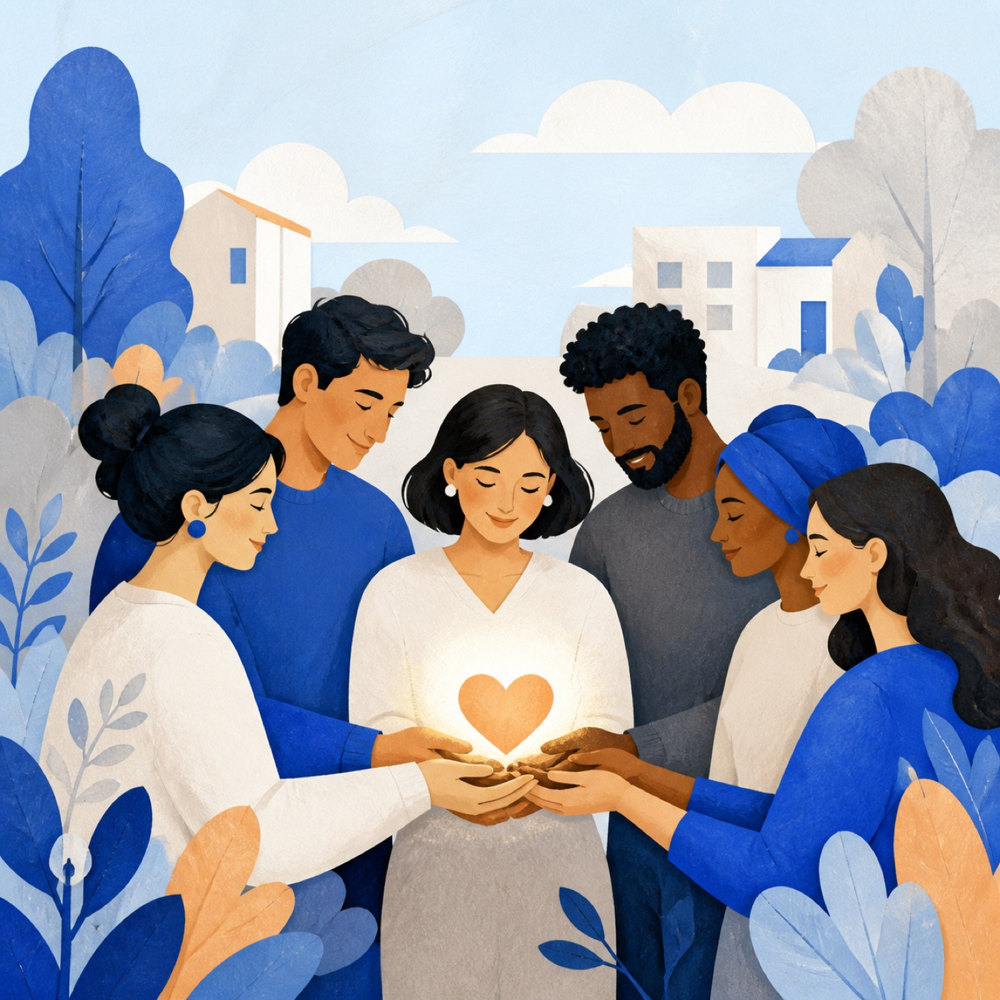
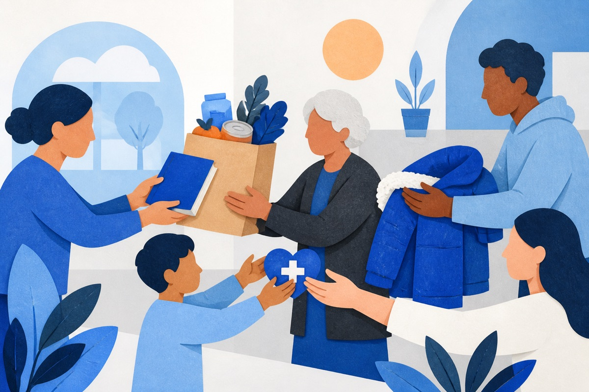
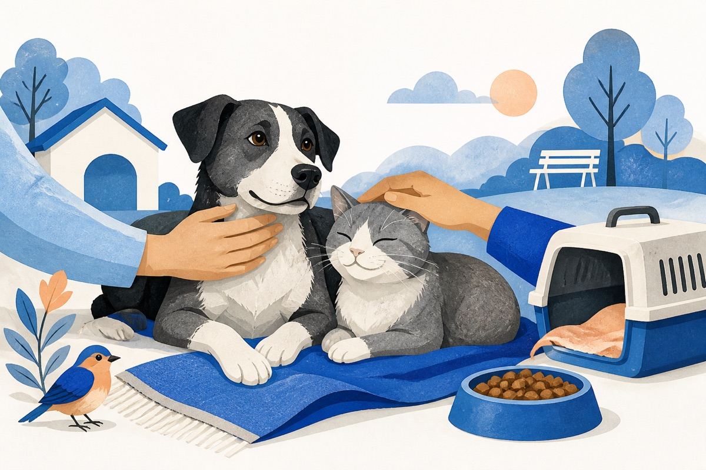
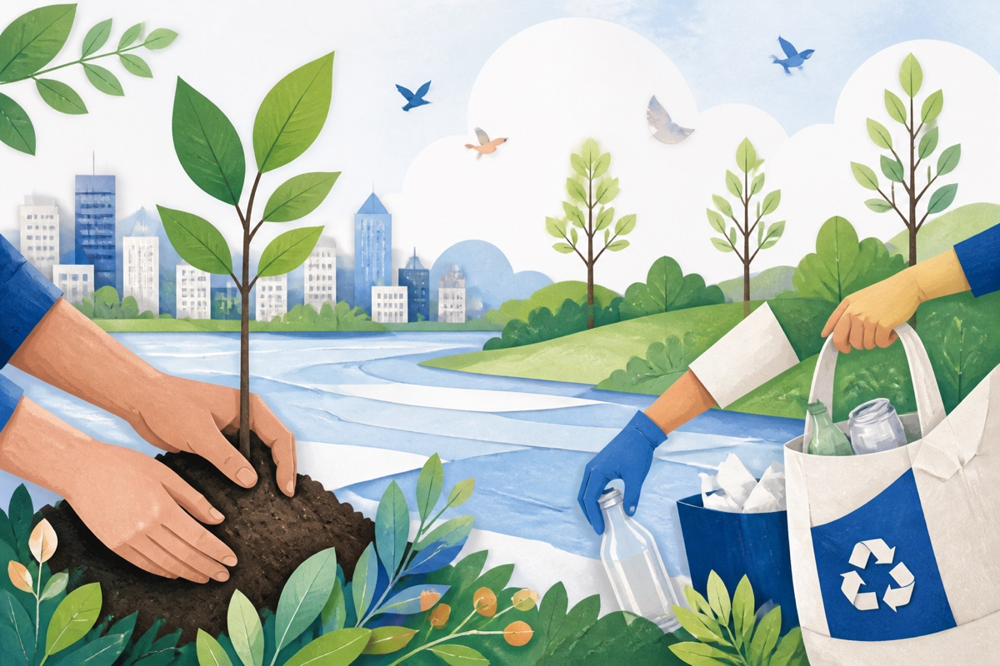

Сделать
Совершить минимум одно доброе дело в месяц — для людей, животных или природы.
Наша цель
Мы собираем друзей, готовых делать минимум одно реальное доброе дело в месяц — для людей, животных или природы.

В чём смысл
Каждый из нас раз в месяц выбирает одно посильное доброе дело — для людей, животных или природы.
Мы рассказываем о сделанном в Telegram, поддерживаем друг друга и находим новые идеи.
Делимся историями, поддерживаем друг друга и находим новые способы помочь.
Три простых действия
Совершить минимум одно доброе дело в месяц — для людей, животных или природы.
Поделиться историей и фотографией в Telegram-канале, чтобы мы увидели общий результат.
Комментировать посты других участников, поддерживать их инициативы и участвовать в жизни канала.
Три направления
Любое доброе дело относится к одному из этих трёх широких направлений.

Всё, что связано с помощью людям: детям и подросткам, пожилым и одиноким, больным и их близким, людям с инвалидностью, семьям в сложной ситуации и другим нуждающимся. Сюда также входят образование, наставничество, забота и поддержка.

Всё, что связано с заботой о домашних питомцах, бездомных и потерявшихся животных, обитателях приютов и передержек, тех, кому нужно лечение, а также о птицах и дикой природе.

Всё, что связано с природой и пространством вокруг нас: дворы и улицы, парки, леса, реки, озёра, берега и горы, растения, чистота вокруг нас и бережное использование природных ресурсов.
Когда мало времени
Добрые дела здесь — лишь примеры, а время — ориентир. Возможностей помочь гораздо больше.
История одного человека может дать другому простую идею и желание тоже помочь.